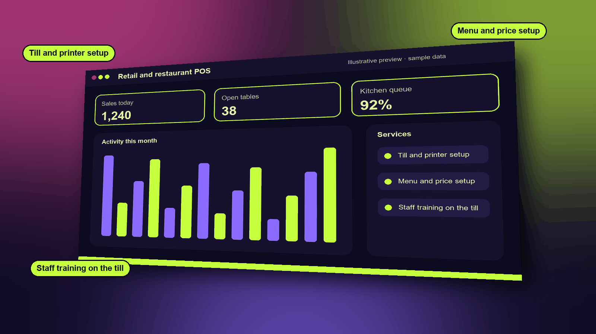

Retail and restaurant POS
Checkout that keeps working when the internet drops, plus tables, kitchen screens and QR ordering for restaurants.
Start free See it in a live demo
What it does
- Fast checkout with split payments and returns
- Offline mode that syncs when the connection returns
- Tables, courses and split bills for restaurants
- Kitchen display screens and customer QR ordering
Who it is for
Shops, cafés and restaurants that sell face to face and need the till to keep working.
Highlights
- Fast checkout with split payments, returns and receipts
- Keeps working when the internet drops, and syncs the sales when it returns
- Tables, courses and split bills for restaurants
- Kitchen screens show each order as it is placed, and stock updates when a dish is served
Works with
InventoryGeneral ledgerMobile money and card terminalsKitchen displaysQR ordering
Questions about this module
What if the internet goes down during service?
Sales keep going on the till, and every sale is posted to the books once the connection is back.
Can customers order from the table?
Yes. A QR code on the table opens the menu, and the order goes straight to the kitchen screen.

Services
- Till and printer setup
- Menu and price setup
- Staff training on the till
Functions
- Fast checkout with split payments
- Offline sales that sync later
- Tables, courses and split bills
- Kitchen display screens
- QR ordering for guests
How it works
- Set up products, prices and tables once.
- Sales work at the till, even when the connection drops, and sync when it returns.
- The kitchen sees each order on its own screen, and stock updates when a dish is served.
A typical example
A café loses internet for an hour at lunch. Orders keep flowing to the kitchen, and the sales appear in the books once the connection is back.
Industries that use it
Example scenarios
See it, then decide
Book a 20-minute demo slot, or request a free trial. We reply by email to confirm.